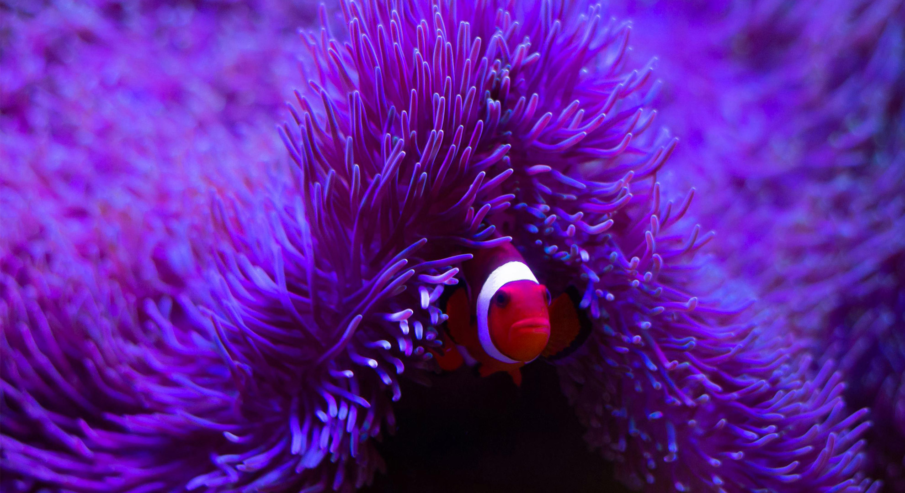
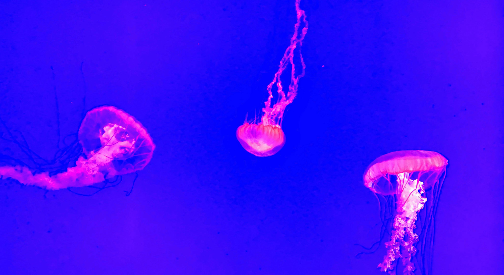

Anything Can be done if we
The ocean has always been a source of wonder, strength, and life. Yet today, it faces
unprecedented challenges—many unseen, many unheard. NERI was born from a simple belief: that
understanding and caring for the ocean is essential to protecting it.
Inspired by the beauty and resilience of the sea, NERI represents a deep commitment to
safeguarding marine life and the fragile ecosystems it depends on. From pollution and climate
change to habitat loss and overfishing, the pressures on our oceans grow every day. These
challenges are vast—but they are not beyond our ability to address.
At the heart of NERI is the idea that awareness leads to action. Through education, compassion,
and collective responsibility, we strive to reconnect people with the underwater world and
remind them that the ocean is not separate from humanity—it is fundamental to our existence.
Even the smallest efforts, when multiplied, can create meaningful change beneath the waves. NERI
stands for unity between humans and the sea, and for the belief that a healthy ocean means a
healthier planet. By choosing curiosity over indifference and action over silence, we can
protect marine life for future generations and ensure our oceans remain alive, resilient, and
thriving.


Dive into the mysteries
of the deep, the unknown
creatures of the ocean.
NERI is driven by the belief that to protect our oceans, we must first understand them. By listening to the unseen and the unheard, we bridge the gap between humanity and the deep.